The three signature sections
The hero with the signup inside a clip-out coupon, "This week's circular" built from Jeff's real Substack deal posts, and "He's got the receipts", his real career on a register tape. Scroll inside the frame. It works on phones too.
Where we're starting
Today's hero is well made, but it's a template: an eyebrow, a big name, two buttons and a stat band. Further down, every section is "heading plus a grid of white cards." Deals are four category links, not actual deals.
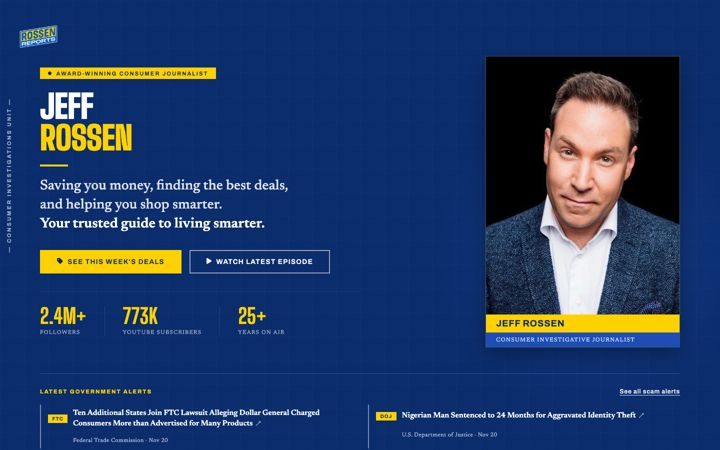
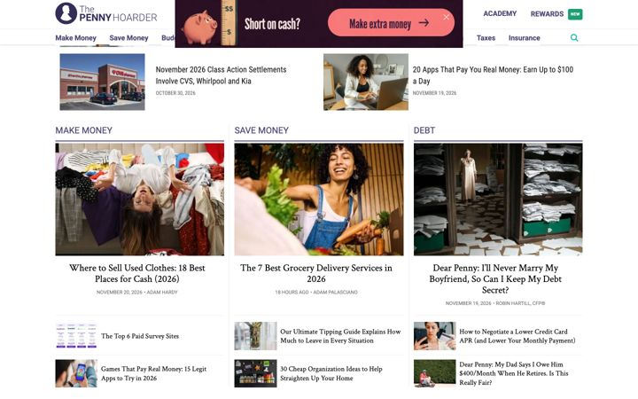
26 sites studied, 12 borrows
The memorable ones get their character from their own printed matter and voice. Trader Joe's is its flyer, Costco is its price signs, MoneySavingExpert is Martin Lewis's face plus a yellow email band. The forgettable ones are interchangeable card grids. The full notes are in design-source/REFERENCES.md.
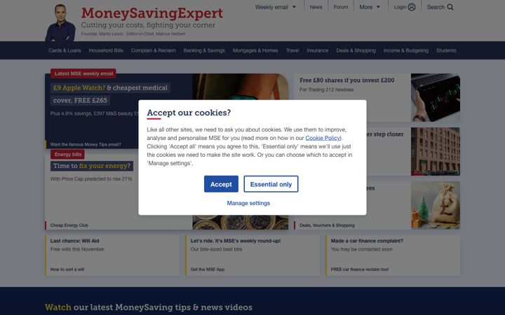
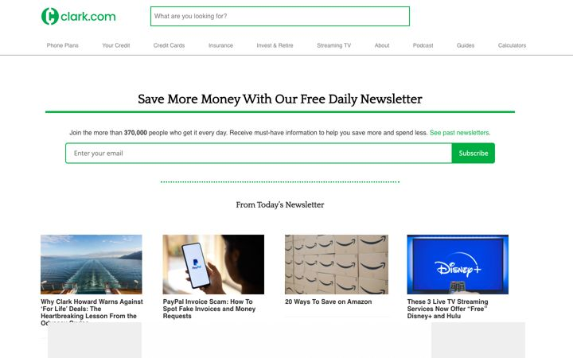
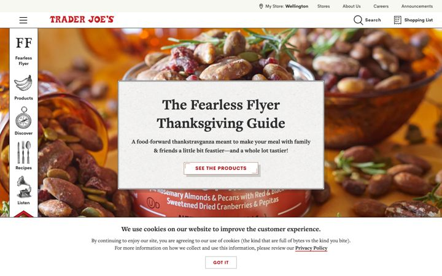
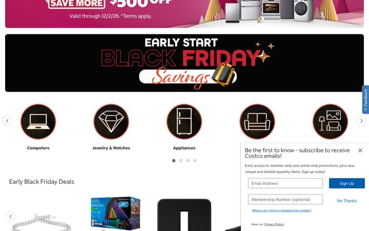
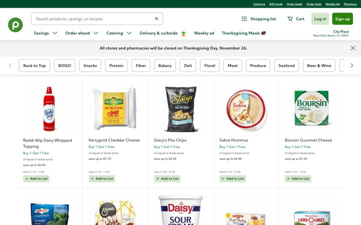
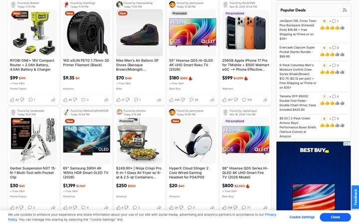
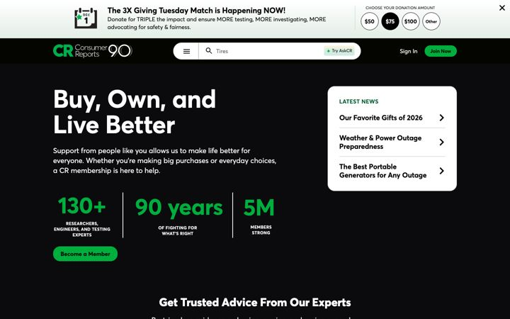
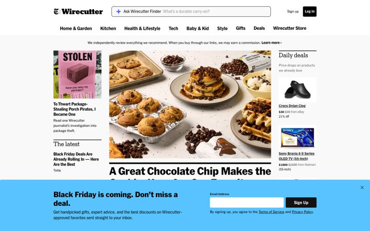
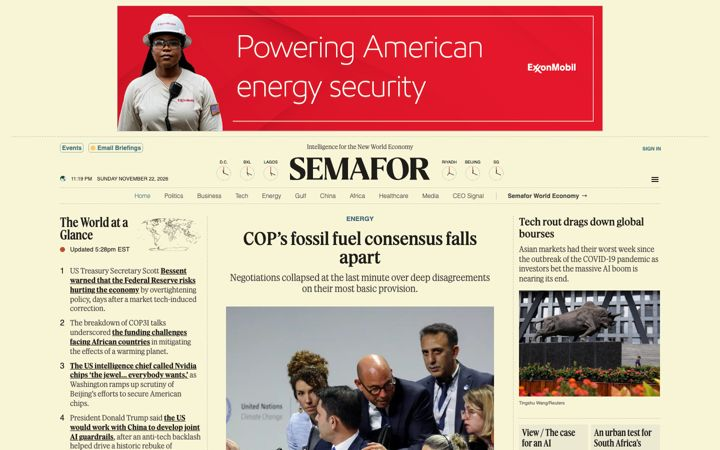
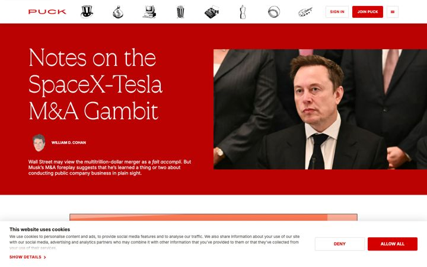
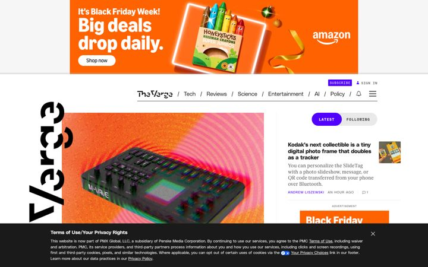
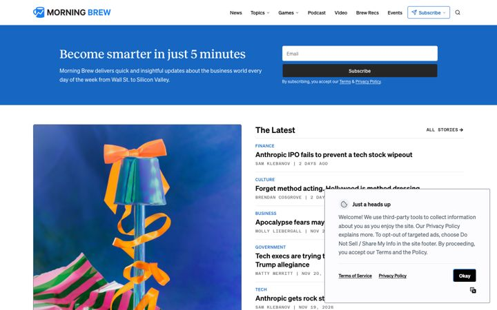
Taken from real things
Every colour is named after the object it comes from, and has a job with its contrast checked.
headlines, button
white 13.4:1
highlight only
navy 10.6:1
page ground
body 16:1
small text 7.6:1
bursts, focus
white 6.2:1
inputs, tape
Jeff's own material, not a template
Each signature element is lifted from something Jeff already makes.
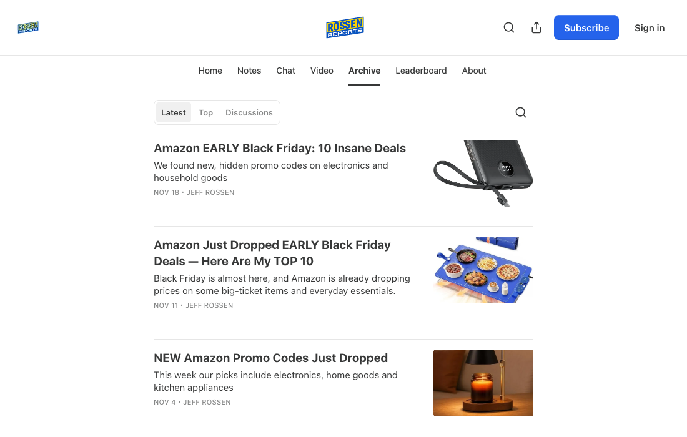
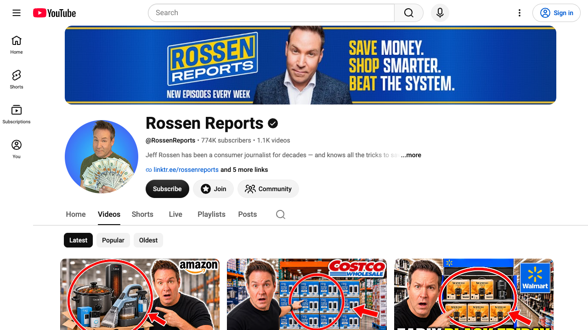
And what it cuts
- Real deals, automatically: "This week's circular" reads Jeff's Substack RSS and shows the latest deal posts. Admin can pin one.
- Signup first: a coupon in the hero, a mid-page band about 1/5 of the way down, a closer above the footer, and a floating phone button. All labelled "Get the Deals".
- "He's got the receipts": the credentials told as a story, replacing the stat band and the icon row.
- Scam alerts, shorter: the 5 newest plus "see all", placed after deals.
- Shop & save merged into deals as "Where Jeff shops".
- Varied sections: no two sections share a layout.
- Art: real photos first. If we want spot illustrations (price tags, scissors, a shopping cart in engraving style), I'll write ChatGPT prompts and label anything generated "Concept".
Cut
- Stat band of big yellow numbers
- Four icon-card grids (deals, shop, credentials, work-with)
- The scrolling testimonials, unless we get real quotes
- The scam-alert strip in the hero
What I need from you (once)
- Go / no-go on this direction.
- Photos: original full-size shots of Jeff: on set, shopping, testing products. Casual beats suit.
- The viewer quotes: are the current ones real? Any real messages about money saved?
- Awards: confirm "Peabody & Murrow for 9/11 coverage, plus an Emmy". I couldn't verify it in public sources.
- Newsletter numbers we're allowed to show (subscriber count, open rate)?
- Admin storage: OK to create a Vercel Blob store so the admin page can save again?